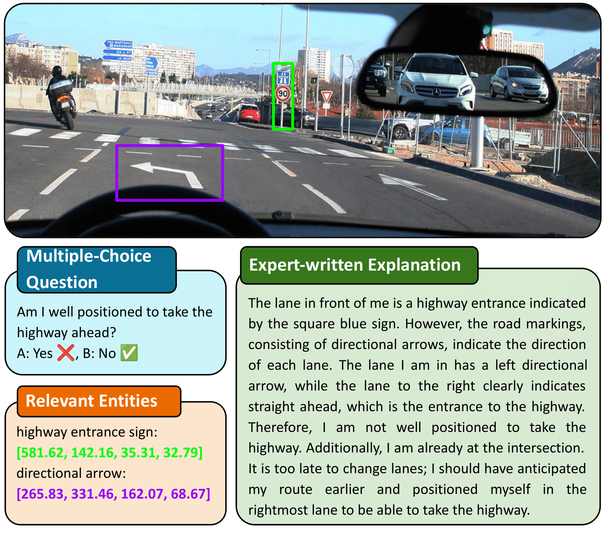
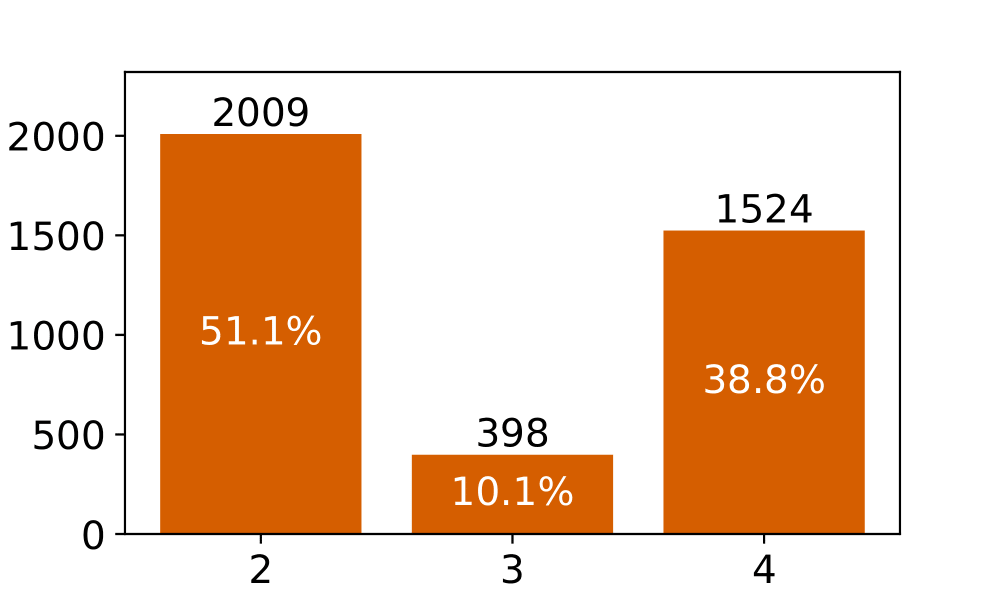
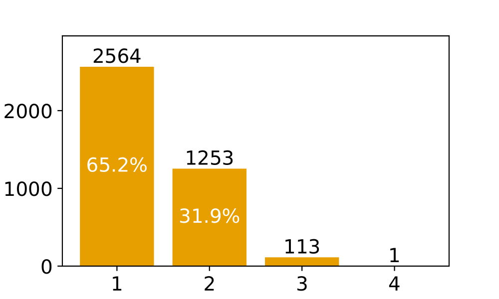
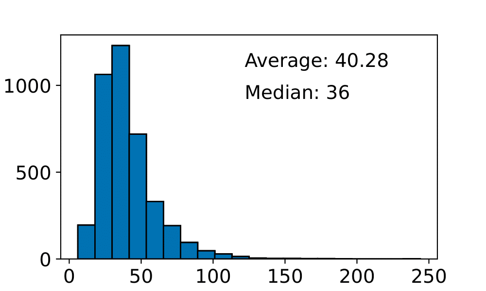
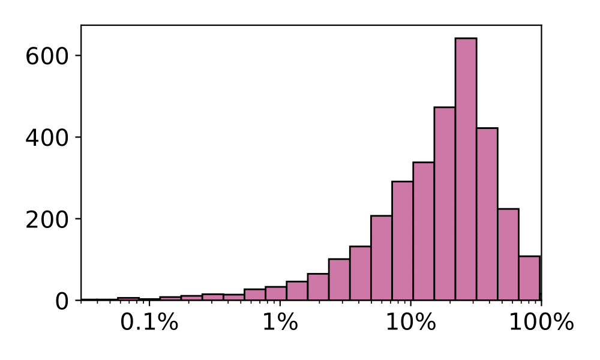
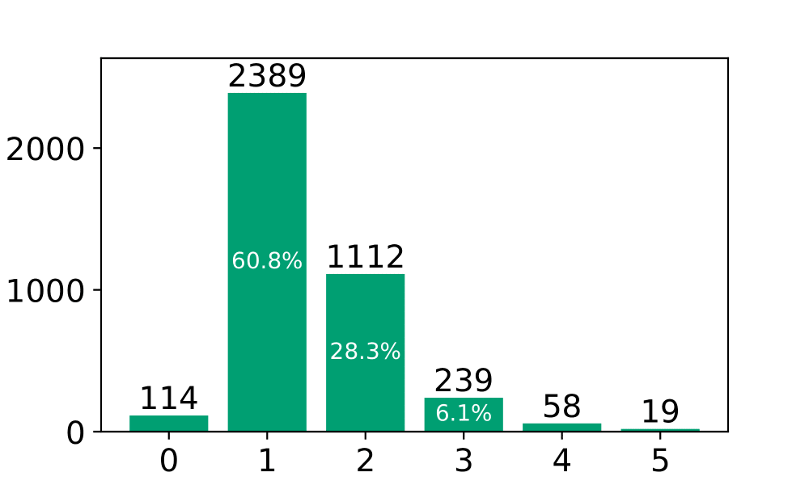
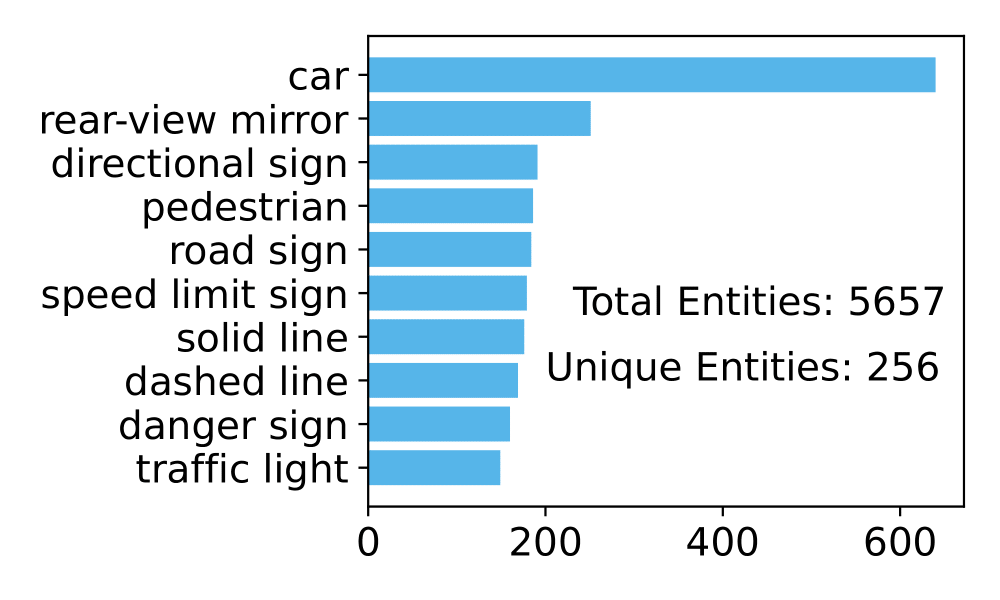
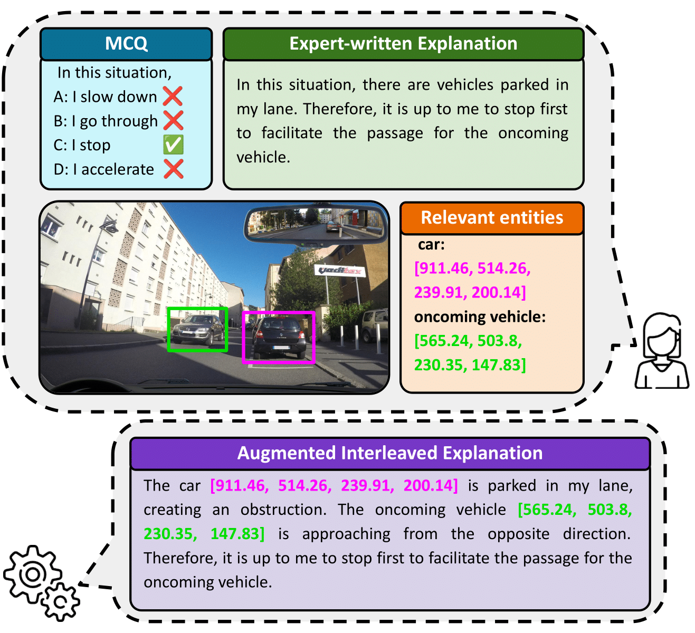
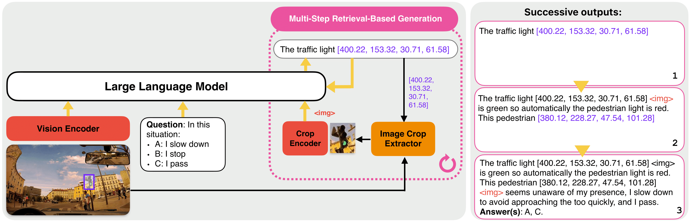

While chain-of-thought (CoT) prompting improves reasoning in large language models, its effectiveness in vision-language models (VLMs) remains limited due to over-reliance on textual cues and memorized knowledge.
To investigate the visual reasoning capabilities of VLMs in complex real-world scenarios, we introduce DrivingVQA, a visual question answering dataset derived from driving theory exams, which contains 3,931 multiple-choice problems with expert-written explanations and grounded entities relevant to the reasoning process. Leveraging this dataset, we propose RIV-CoT, a Retrieval-Based Interleaved Visual Chain-of-Thought method that enables VLMs to reason using visual crops corresponding to these relevant entities.
Our experiments demonstrate that RIV-CoT improves answer accuracy by 3.1% and reasoning accuracy by 4.6% over vanilla CoT prompting. Furthermore, we demonstrate that our method effectively scales to the larger A-OKVQA reasoning dataset by leveraging automatically generated pseudo-labels, outperforming CoT prompting.
The DrivingVQA dataset contains 3,931 samples each featuring one or two visual questions with multiple answer choices, alongside expert-written explanations and human annotations of relevant entities with bounding box coordinates, divided into a training set (80%) and a test set (20%, 789 samples). The following provides an overview of the dataset:

We also provide a set of statistics to illustrate the dataset's diversity and complexity:






The data acquisition pipeline included:
RIV-CoT is a framework designed to enhance the visual reasoning abilities of VLMs by explicitly grounding their chain-of-thought process in visual evidence. RIV-CoT relies on two distinct modules: (1) the data augmentation of human-annotated explanations by interleaving them with relevant entities, and (2) a multi-step retrieval-based generation during inference to dynamically insert image crops containing relevant entities detected by the VLM into its generated chain-of-thought. The first modules is illustrated in the following figure:

The multi-step retrieval based generation at inference starts with a tokenized question and an image tokenized by the adapter on the output of the Vision Encoder. The Large Language Model generates output until it predicts a bounding box. At this point, the generation process pauses to extract the corresponding image crop based on the predicted coordinates. The image crop is encoded and adapted into an image crop token, which is then added back into the model’s context along with the question, image tokens, and previously generated outputs. This iterative process continues until the model produces its final answer. We illustrate this process in the following illustration:

We benchmark our method, RIV-CoT, against answering directly the answer (DirectAnswer) and using the chain-of-thought prompting (CoT) on both DringVQA and AOKVQA. Note that, annotations of relevant entities bounding boxes are not available on AOKVQA. Therefore, we generate pseduo annotations using GPT-4o-mini to detect potential relevant entities and GoundingDINO to localize these entities within the image. We obtain the following exam scores for DrivingVQA and accuracy for AOKVQA with three different seeds:
| Method | DrivingVQA (Exam score) | AOKVQA |
|---|---|---|
| DirectAnswer | 53.0 (±0.9) | 78.2 (±0.3) |
| CoT | 56.2 (±1.0) | 80.6 (±0.4) |
| RIV-CoT | 59.3 (±1.0) | 84.2 (±0.2 |
Use the link below to access the dataset on HuggingFace Hub.
The dataset is organized into training, validation and testing subsets with the following structure:
DrivingVQA/ ├── train.json # Train images, image size, questions, answers, explanation, bounding boxes ├── test.json # Test images, image size, questions, answers, explanation, bounding boxes ├── dataset_infos.json # Information about the dataset ├── images/ # Images used in the datasetBibTeX
If you use the DrivingVQA dataset in your research, please cite it using the following BibTeX entry:
@article{corbiere2025drivingvqa, title={DRIVINGVQA: Analyzing Visual Chain-of-Thought Reasoning of Vision Language Models in Real-World Scenarios with Driving Theory Tests}, author={Corbi{\`e}re, Charles and Roburin, Simon and Montariol, Syrielle and Bosselut, Antoine and Alahi, Alexandre}, journal={arXiv preprint arXiv:2501.04671}, year={2025} } }